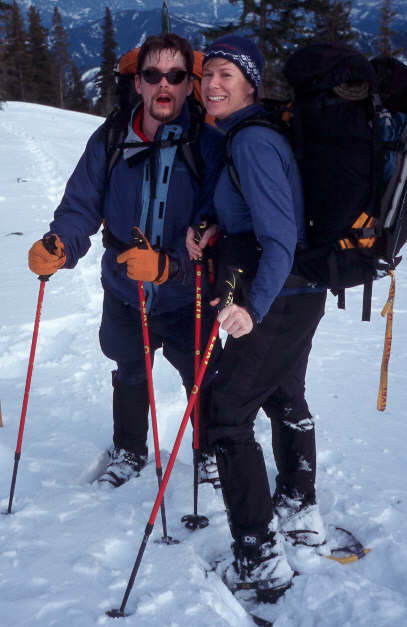
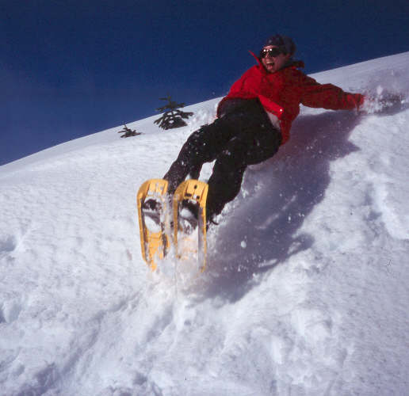
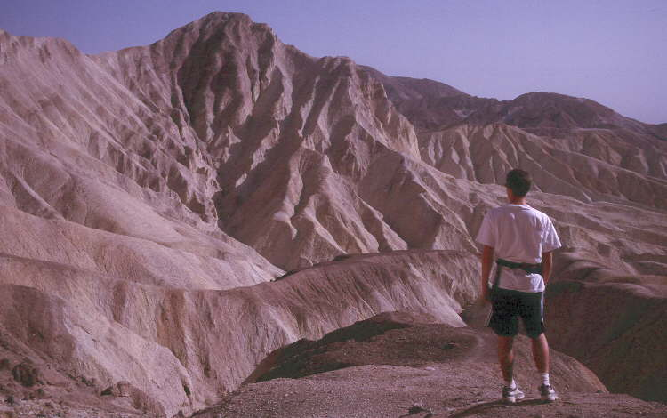
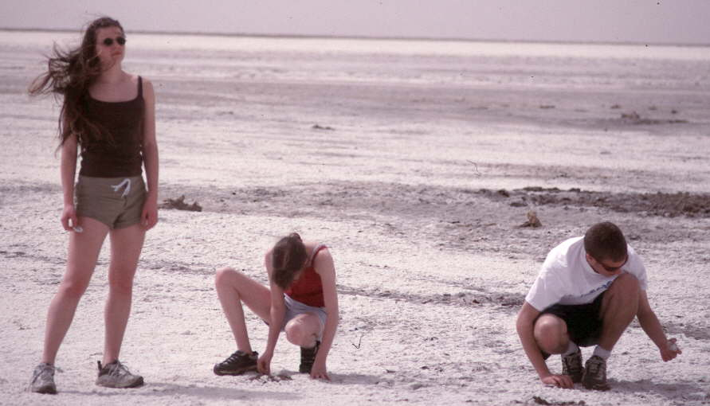
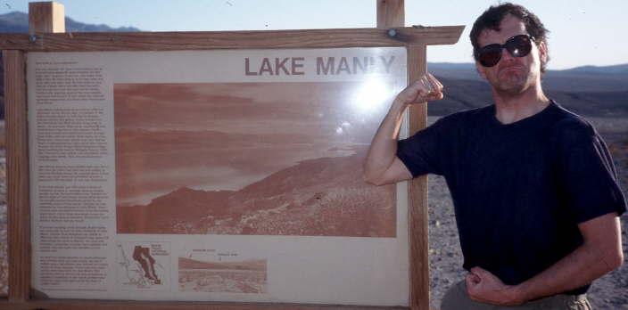
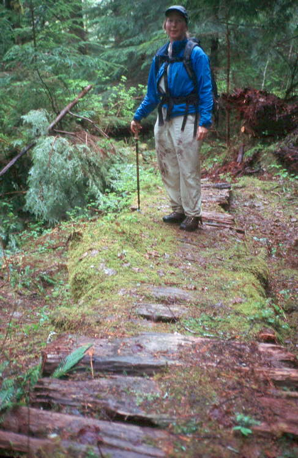
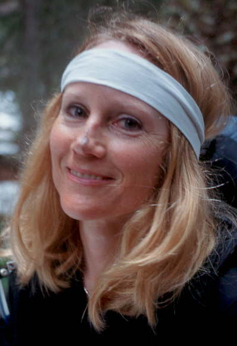
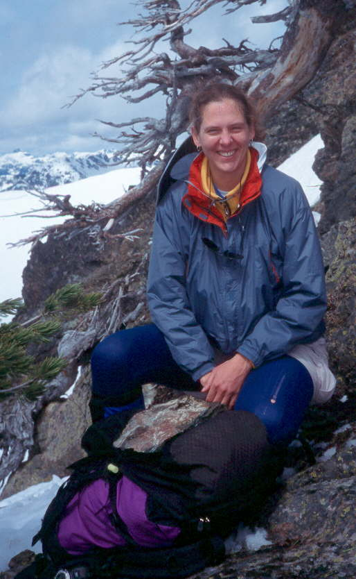
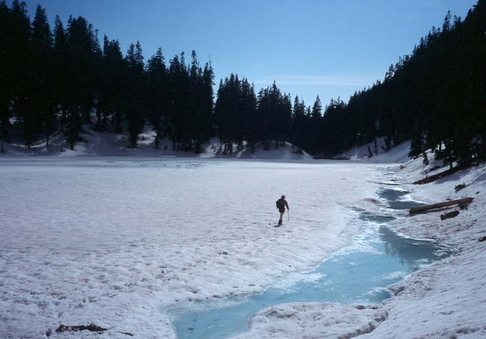
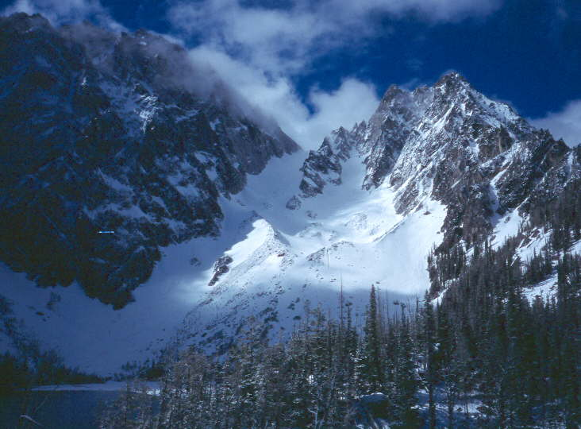

Granite Mountain, Boealps, Dec 30, 2001.

Snowshoeing on Table Mt, Feb 3.
{kind=link}

Scott and Dana near Ethel Lake, Feb 16-17.
{kind=link}

Kristen glissading near Kendall Lakes, Feb 25.

Celia on Windy Mt, Mar 4.

Badwater, Death Valley, Apr 15.
{kind=link}

Gary at Cathderal Rock cliffs, Death Valley, Apr 15.
{kind=link}

Model and two geologists, Death Valley, Apr 15.

Acting manly at Lake Manly, Death Valley, Apr 15.
{kind=link}

Acting even more manly. How come there's no lake any more?!

Landslide on Mt Persis, Kim, Apr 29.

Mizuki and Debbie on Dirtyface, May 12.

Shadow on Mt Persis, Apr 29 (photo by Kim R. Brown).
{kind=link}

Kim standing on ancient puncheon, abandoned Troublesome Creek trail, May 21.
{kind=link}

Soot from burned trees on Debbie's nose, Frigid Mt, May 25.
{kind=link}

Janet on Hawkins Mt, May 27.
{kind=link}

Mike crossing Greenridge Lake after summitting Floating Rock and Galleon, June 10.
{kind=link}

Dragontail and Colchuck rise above Colchuck Lake, June 7.